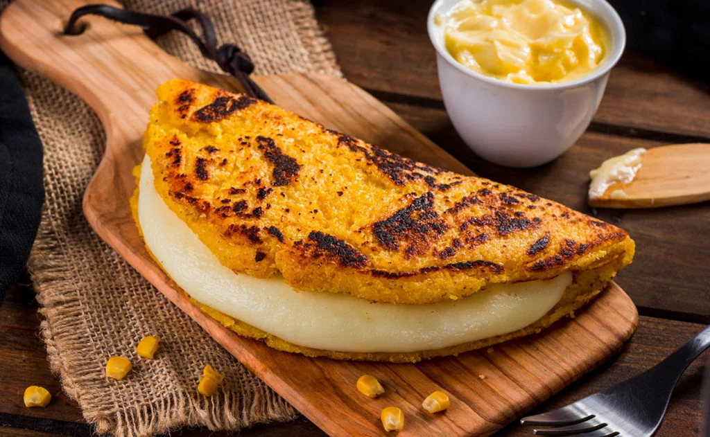

Cachapas
Description
A cachapa is a type of Venezuelan pancake that is made with corn. The cachapa makes use of this staple crop by grinding fresh corn to create a hearty corn cake that is distinguished by its sweet, creamy corn flavor.
cooked in a budare (a clay or iron plate). It is then served with queso de mano (Venezuelan fresh cheese) and butter.
Ingredient
- 3 cups corn, fresh or frozen kernels
- 1 tablespoon cream
- 1 teaspoon kosher salt
- 2 tablespoons unsalted butter, melted
- 1/4 cup cornstarch, optional
- Butter and cream cheese, garnish
How to make
- Place the corn, cream, salt, melted butter, and cornstarch (if using) in a food processor or blender. Process until you have a fairly smooth, thick batter.
- Heat a lightly oiled skillet over medium-low heat.
- Add about 1/4 to 1/3 cup of the batter to a skillet. Spread it with a spatula to make a circle.
- Cook the pancake until it starts to bubble and the spatula can easily slide underneath it.
- Flip the pancake and cook for several minutes on the other side. Keep the temperature on the low side, or the outside of the pancakes will burn before the inside is completely cooked.
- Continue cooking pancakes until you have used all the batter.
- Spread the pancakes with butter and cream cheese or top with grated queso fresco cheese.